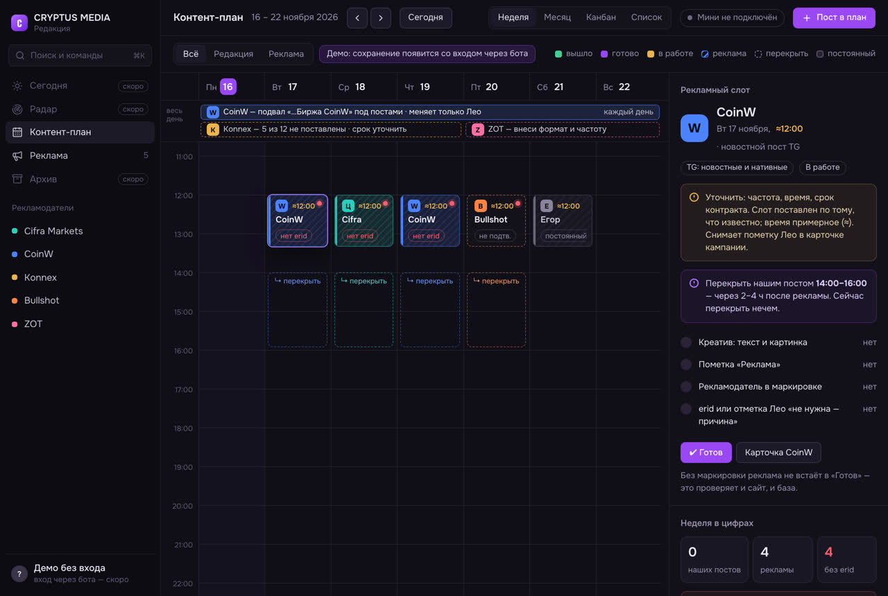

CRYPTUS · пульт проекта
Всё в одном месте: что сделано, что не получилось, что дальше и где смотреть. Обновлено 17.11.2026.
Два продукта
🤖 Бот-редактор · работает, пилот у Андрея
@design_brat_bot → /start → «🖋 Редактор». Радар → глубокий ресёрч → пост → картинка.
🗂 Сайт «Редакция CRYPTUS» · строится, пока без живой ссылки
Контент-план, реклама, учёт обязательств. Живая ссылка появится после базы Supabase (за тобой).
Где смотреть
▶️ ДЕМО сайта — прокликать
Контент-план + «Реклама»: добавить, перенести, перекрыть, засчитать. Сохраняется в твоём браузере
🧭 Платформа: путь редактора и Лео — на согласование
Все шаги бота экранами: состояния загрузки, развилки, картинки вариантами, выбор стиля
🧭 Воронка бота — схема от точки до точки
Каждый шаг: экран, что нажимаешь, что делает бот внутри
📅 Контент-план — первая волна сайта
Неделя, месяц, канбан, рекламные слоты партнёров (скрины)
📒 Вкладка «Реклама» — трекер (новый образец)
Прогресс-бары по каналам, «вышло N из M», «↺ Новый месяц», ссылки, «добавить ссылку»
🖥 Образец сайта — 3 экрана
Контент-план, пост, живой ресёрч — кликабельно
🎨 Стили картинок — канон Метеоры (11 форматов)
6 стилей + 5 карточных серий, номера 1–11 — так выбирать на платформе
🎯 Текст «как у Метеоры» — эталон | наш
Приём Метеоры A1 перенесён один в один: «5 ГИРЬ», «$61 950», табло
📡 Карта источников
123 голоса в X, 38 YouTube, Reddit, белый/чёрный список СМИ
🎞 Оживление картинок
Ролики кодом (работает) и честно про Veo (не работает)
🖼 Эталоны «как было — как будет»
Гэвин Вуд, Метеора, Polkadot и разбор, как их делали
Контент-план — так он выглядит

Это первая волна сайта на тестовых данных: CoinW, Цифра, Konnex, Bullshot, ZOT в календаре; без пометки «Реклама»/erid слот не встаёт в «Готов». Живым и с сохранением станет после базы.
Что сделано круто
✅Тексты и ресёрч. Всегда глубокий ресёрч (Gemini + Perplexity + Claude + X + YouTube), досье одной статьёй со ссылками, 5 форматов, 7 голосов канала, пост одним сообщением в нашей вёрстке.
✅Безопасность. Два аудита (в т.ч. на самой сильной модели): утечка ключей, лишний доступ Андрея, подделка «бесплатно», лимиты — закрыто и перепроверено.
✅Надёжность. Сторож раз в час, обновления без потери заданий, одно окно браузера, ночная уборка в Google Диск.
✅Стили. 6 стилей + 5 карточных серий + 8 дополнительных, выбор картинкой «1…N» прямо в боте.
Что не круто — честно
❌Картинки в пилоте вышли слабыми. Бот рисовал с одного раза, на запасной модели, текст ломался. Процесс переделан (ТЗ по эталонам, 3 варианта, критик, проверка букв) — но текст на картинках всё ещё слабый: «призрак», тонущие цифры, простой шрифт. Чиним сейчас.
❌Андрей остался без картинки к посту. Бот принимал «сделай картинку» за новую тему — исправлено.
⚠️Квота Gemini кончается к вечеру → бот уходит на слабую модель. Нужно твоё решение (ниже).
⚠️Veo-видео не работает (3 попытки — 0 роликов). Оживляем кодом.
⚠️Сайт без живой ссылки и ссылки были разбросаны — этот пульт и есть исправление.
Роадмап — один продукт «Редакция CRYPTUS» (решение Лео 17.11)
Бот-пилотРадар, глубокий ресёрч, посты, картинки, безопасность — работает у Андрея
Текст на картинках = приём МетеорыПредмет вырезан, гигантский текст за ним, красный/фиолетовый — принято
1. Контент-план + рекламаСлот: выбрать → время → перекрыть. Трекер: TG/YouTube/X/Instagram, трафик по каждому посту. Строится
2. Воронка на платформеРадар → живой глубокий ресёрч → досье. Строится
3. Создание контентаФормат/угол/голос → варианты → правки → пост приходит в Telegram. Строится
4. Выбор картинокСетка стилей с номерами → описание по-русски → варианты → выбор кликом. Строится
5. Релиз платформы — живая ссылка со входомЖдёт входа в Supabase
Проверка безопасности и логики перед релизомАудит + сквозная проверка
Что нужно от тебя
- Supabase — supabase.com → Organizations: сколько активных бесплатных проектов. Без этого сайт не станет живой ссылкой.
- Запасная модель картинок — когда кончается квота Gemini: Nano Banana Pro в Higgsfield (2 кредита за кадр, потолок 30 в день) — рекомендую; или только бесплатный Seedream.
- Perplexity Pro — войти в основном Chrome на мини.
- xAI — пополнить, чтобы вернулся поиск по X.
- 3 черновые картинки 16.11 в открытом хранилище — удалить (рекомендую) или оставить.
Страница закрыта от поисковиков. Цены договоров и секреты сюда не попадают.